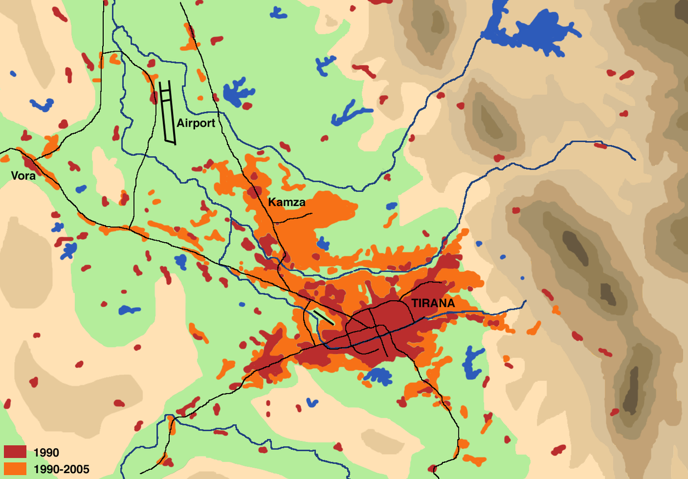

Demografia
Tirana este cel mai populat oraș din Albania și a 6-a cea mai populata capitala din Balcani. Cu toate acestea, orașul este, de asemenea, singura zonă metropolitană a țării. După cum a definit Institutul de Statistică al Albaniei în 2011, zona urbană a orașului a includea 526.017 persoane. Zonele rurale din județul Tirana, cunoscute sub numele de suburbiile Tiranei, au inclus 223 348 de persoane.
În total, cifra pentru județ a fost de 749.365 persoane. Numărul femeilor depășește ușor numărul bărbaților din județ, cu 370.587 bărbați și 378.778 femei. Tirana găzduiește numeroase etnii din toată Europa de Sud. Aproximativ 84,10% (630,203) din populație era de origine albaneză, 0,35% (2.596) greci, 0,11% (856) aromani, 0,07% (513) macedoneni și 0,03% (198) italieni, cu 0,14% etnia lor.
Se remarcă faptul că cele mai vechi cartiere erau Mujos și Pazari, între Piața Skanderbeg și strada Elbasani, de o parte și de alta a râului Lana. În 1820, populația Tirana avea aproximativ 12 000 de locuitori. La sfârșitul comunismului în 1990, orașul avea circa 250.000 de locuitori, iar de atunci un aflux de mari dimensiuni din alte părți ale țării a crescut populația la peste 700.000.
Tirana a fost menționată pentru prima dată între 1372 și 1418 în documente venețiene. În acea perioadă, orașul era cunoscut ca un sat mic, format din 60 de zone locuite, cu aproape 7300 de locuitori. Marin Barleti, un istoric și preot albanez din Shkodër, a remarcat Tirana Mare și Tirana Mică. În 1583, orașul avea 110 de zone locuite cu 20.000 de locuitori.
Când Sulejman Pasha a înființat orașul în 1614, primele construcții din zonă au fost o moschee, o brutărie și un hamam.
Două secole mai târziu, guvernarea orașului a fost câștigată de familia nobilă Toptani din Krujë, iar orașul avea doar 4000 de locuitori.
Copyright © November 2018 - All Rights Reserved - CEI 4 FANTASTICI